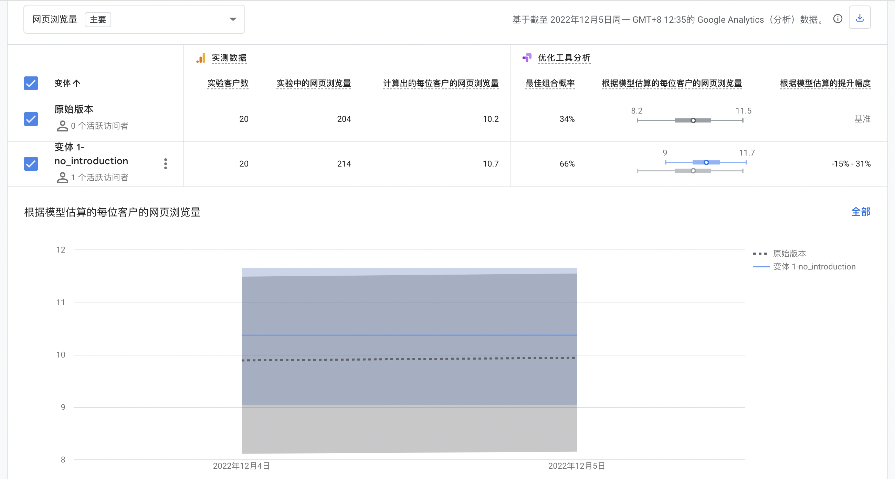

Jenni
Usability & A/B Test
My website tends to meet the needs of card-decoration lovers, and my final personas include 2 parts: entry-level users who wants further development and experienced users who wants to share works and experiences. The website, attempting to reduce their effort on information collecting and layout figuring, provides templates and style-classified information of stickers and works. The website also has template customization and ready-made sticker packs for sale.
The monetization logic lies in the membership and customization regulations:
Membership Regulation:
Members (free version) can browse the sticker, artwork information and the sale events calendar. They can also join in the community. But they cannot see the template details.
Paid members (8 yuan/month) have all the rights belong to members (free version), and they can view the template detail. They will also receive customization service once a month for free.
Premium members are certified ones who can upload their own artwork, they can browse the template details, but they won’t receive free customization service once a month.
Customization Regulation:
Customized service prices range from $5-$15, depending on specific requirements.
Monthly subscriptions for sticker packs are $50 per month (approximately 8-10 sheets), with the rest of the sticker pack options available upon request.
In order to test if my website can really meet users’ need and attract them to join, usability test and A/B test need to be conducted.
Usability test can check if users find the website easy to use and useful. I can observe the true process of users’ operation and their feelings and actions. A/B test, however, is used to find out how can I attract more people to really join. It can give me the exact number of engagements.
Usability Test:
I designed 6 tasks (1 open task) for the usability test:
(1) Sign up and log in, see if you can accept the membership regulation
(2) Select a sticker style and check one sticker’s information; select an artwork style and check on one artwork’s information
(3) Where would you click if you want to see some recommendation about sticker packs and make customized orders?
(4) What would you do if you want to join the community?
Browse some posts/Make your own posts
(5) please just click around and see if you can go back to any other pages fluently.
(6) Please try to log out and try to see the calendar page or the sticker detail page again.
Here are also 4 post-test questions:
(1) Rate the overall process (1-7, 1: very unsatisfied, 7: very satisfied)
(2) What difficulties have you encountered? Which part do you think should be improved?
(3) What is the most helpful or impressive part of my website?
(4) Can you make some comments about the website? Both positive and negative are OK~
Result:
1. The 6 tasks are finished by all the participants. They can quickly find the function and reach the pages.
2. They tend to use the navigation bar to find where the function is. Drop-down list makes it more convenient for them to reach the aim.
3. On most occasions, they followed the similar steps, and the time cost was stable, so the function design is relatively eligible.
4. They can accept the membership and service regulation, and they are willing to pay.
5. In addition to the pages involved in this test, they are also interested in the calendar and other parts of the homepage, so I need to pay attention to their design.
6. Overall, they show satisfaction to the website and consider it as a platform which can solve their problems during the whole process of card-decoration.
A/B test:
I added the membership regulation in the login page, so that before they decide if they will register, they can see the benefits of becoming a member/paid member/premium member. So, I want to check if the regulation is attractive enough to trigger more registration.
In the original version of my website, you can easily see the membership explanation, it’s just under the “log in” button. But in the variant, I deleted the membership explanation, users do not know what they will get as a member before they click into the sign-up page.
Result:
In the A/B test result, we can see that the website with the explanation gained more registration.
However, here are something I need to explain. One user should only register once, but during the process, a visitor encountered a problem, so she accidentally signed up for 4 times, and I signed up another several times to check the problem. We all met the original version of the login page. When we were examining this, we just click the login page without browsing other pages, so the page view number of the original version is lower.
So, the real conversion number of the original version should be about 15, which means among 20 users, 15 of them choose to register. It is still higher than the variant, suggesting the membership explanation on the login page will make users more likely to register.
Anyway, the A/B test result is only for a single day with an accident, so I absolutely need more time and larger sample size to further observe.
You may click here to view my journals.